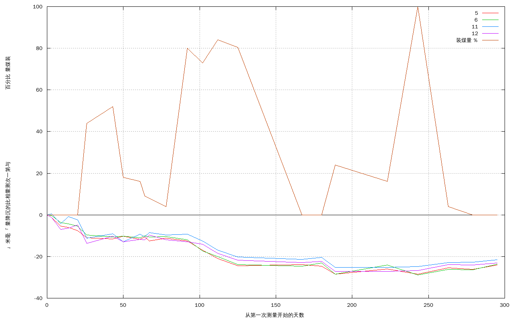

二号块精煤仓高程表
| 时间 | 各点高程 |
| | 5 | 6 | 11 | 12
|
| 2010.01.07 | 1394.0405 | 1394.166 | 1394.2995 | 1394.0815 |
| 2010.01.10 | 1394.0393 | 1394.1658 | 1394.3 | 1394.0803 |
| 2010.01.16 | 1394.035 | 1394.1623 | 1394.2953 | 1394.0745 |
| 2010.01.21 | 1394.0345 | 1394.1617 | 1394.2987 | 1394.0752 |
| 2010.01.27 | 1394.033 | 1394.1606 | 1394.2971 | 1394.0766 |
| 2010.02.02 | 1394.0295 | 1394.1563 | 1394.2883 | 1394.0678 |
| 2010.02.19 | 1394.029 | 1394.1553 | 1394.2905 | 1394.0713 |
| 2010.02.26 | 1394.0303 | 1394.1558 | 1394.2865 | 1394.0685 |
| 2010.03.09 | 1394.0288 | 1394.155 | 1394.2903 | 1394.0698 |
| 2010.03.12 | 1394.0298 | 1394.156 | 1394.289 | 1394.0695 |
| 2010.03.15 | 1394.028 | 1394.1553 | 1394.291 | 1394.0718 |
| 2010.03.26 | 1394.0293 | 1394.1555 | 1394.2898 | 1394.0695 |
| 2010.04.09 | 1394.028 | 1394.154 | 1394.2902 | 1394.0685 |
| 2010.04.19 | 1394.0236 | 1394.1487 | 1394.287 | 1394.0675 |
| 2010.04.29 | 1394.0195 | 1394.1459 | 1394.2825 | 1394.0631 |
| 2010.05.12 | 1394.016 | 1394.1422 | 1394.2792 | 1394.0598 |
| 2010.06.23 | 1394.0166 | 1394.1414 | 1394.2782 | 1394.0585 |
| 2010.07.06 | 1394.0158 | 1394.1429 | 1394.2791 | 1394.0592 |
| 2010.07.15 | 1394.0121 | 1394.1375 | 1394.2743 | 1394.0543 |
| 2010.08.18 | 1394.0145 | 1394.1420 | 1394.2743 | 1394.0543 |
| 2010.09.07 | 1394.0121 | 1394.1371 | 1394.2747 | 1394.0547 |
| 2010.09.27 | 1394.0151 | 1394.1398 | 1394.2766 | 1394.0577 |
| 2010.10.13 | 1394.0143 | 1394.1396 | 1394.2768 | 1394.0575 |
| 2010.10.29
| 1394.0165
| 1394.1424
| 1394.2779
| 1394.0584
|
二号块精煤仓沉降表
| 时间 | 各点沉降量 |
| | 5 | 6 | 11 | 12
|
| 2010.01.07 | 0.0 | 0.0 | 0.0 | 0.0 |
| 2010.01.10 | 0.0012 | 0.0002 | -0.0005 | 0.0012 |
| 2010.01.16 | 0.0055 | 0.0037 | 0.0042 | 0.007 |
| 2010.01.21 | 0.006 | 0.0043 | 0.0008 | 0.0063 |
| 2010.01.27 | 0.0075 | 0.0054 | 0.0024 | 0.0049 |
| 2010.02.02 | 0.011 | 0.0097 | 0.0112 | 0.0137 |
| 2010.02.19 | 0.0115 | 0.0107 | 0.009 | 0.0102 |
| 2010.02.26 | 0.0102 | 0.0102 | 0.013 | 0.013 |
| 2010.03.09 | 0.0117 | 0.011 | 0.0092 | 0.0117 |
| 2010.03.12 | 0.0107 | 0.01 | 0.0105 | 0.012 |
| 2010.03.15 | 0.0125 | 0.0107 | 0.0085 | 0.0097 |
| 2010.03.26 | 0.0112 | 0.0105 | 0.0097 | 0.012 |
| 2010.04.09 | 0.0125 | 0.012 | 0.0093 | 0.013 |
| 2010.04.19 | 0.0169 | 0.0173 | 0.0125 | 0.014 |
| 2010.04.29 | 0.021 | 0.0201 | 0.017 | 0.0184 |
| 2010.05.12 | 0.0245 | 0.0238 | 0.0203 | 0.0217 |
| 2010.06.23 | 0.0239 | 0.0246 | 0.0213 | 0.023 |
| 2010.07.06 | 0.0247 | 0.0231 | 0.0204 | 0.0223 |
| 2010.07.15 | 0.0284 | 0.0285 | 0.0252 | 0.0272 |
| 2010.08.18 | 0.026 | 0.024 | 0.0252 | 0.0272 |
| 2010.09.07 | 0.0284 | 0.0289 | 0.0248 | 0.0268 |
| 2010.09.27 | 0.0254 | 0.0262 | 0.0229 | 0.0238 |
| 2010.10.13 | 0.0262 | 0.0264 | 0.0227 | 0.024 |
| 2010.10.29
| 0.024 | 0.0236 | 0.0216 | 0.0231 |
二号块精煤仓沉降图
